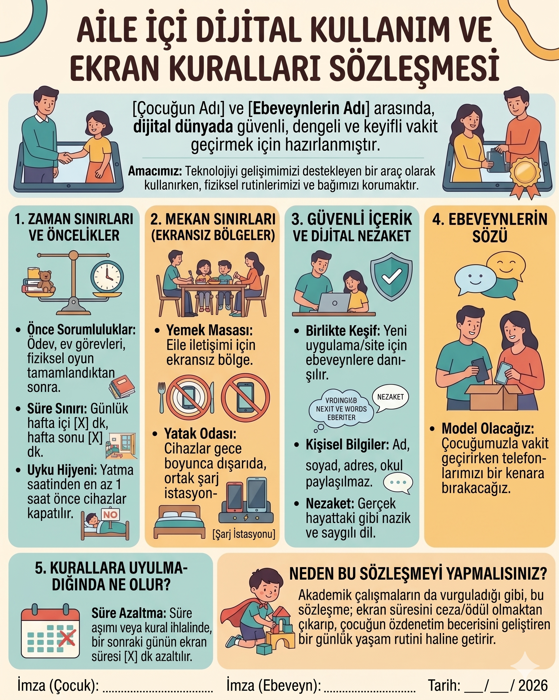

Ekran kuralları

Kısa yanıt: Aile içi dijital kullanım sözleşmesi; çocuk ve yetişkinlerin ekranı ne zaman, nerede, hangi amaçla ve hangi güvenlik kurallarıyla kullanacağını birlikte belirleyen yazılı bir aile medya planıdır. Etkili bir sözleşme yalnız çocuğa yasak koymaz; yetişkinlerin sorumluluklarını da içerir, çocuğun gelişim düzeyine göre hazırlanır ve belirli aralıklarla güncellenir. Amacı cezalandırmak değil; uyku, oyun, hareket, öğrenme, mahremiyet ve aile iletişimini koruyan öngörülebilir sınırlar oluşturmaktır.
Önemli not: Bu metin hukuki bir sözleşme veya bilimsel değerlendirme aracı değildir. Ailenin dijital alışkanlıklarını birlikte düzenlemesine yardımcı olan gelişimsel bir rehber ve örnek plandır.
Aile içi ekran sözleşmesi nedir?
Aile içi ekran sözleşmesi; telefon, tablet, televizyon, bilgisayar, oyun konsolu ve çevrim içi platformların kullanımına ilişkin ortak beklentileri görünür hâle getirir. “Telefonu çok kullanma” gibi belirsiz uyarılar yerine şu sorulara somut yanıt verir:
- Ekran hangi zamanlarda kullanılabilir?
- Hangi alanlar ekransızdır?
- Hangi içerikler ve iletişim biçimleri uygundur?
- Yeni uygulama, oyun veya satın alma için nasıl izin alınır?
- Kişisel bilgiler ve fotoğraflar nasıl korunur?
- Kullanımı sonlandırmak için hangi geçiş rutini uygulanır?
- Kurala uyulmadığında nasıl onarım yapılır?
- Ebeveynler hangi davranışlarla model olur?
Sözleşme, çocuk üzerinde tek taraflı denetim kurmak için kullanıldığında işlevini kaybedebilir. Çocuğun görüşünün alınması, bütün kararların çocuk tarafından verilmesi anlamına gelmez. Yaşa uygun katılım; çocuğun kuralların gerekçesini anlamasını ve uygulanabilir çözümler üretmesini sağlar.
Ekran kuralları neden yazılı olmalı?
Yazılı bir plan, kuralların yalnız çatışma anında hatırlatılmasını önler. Çocuk ne beklendiğini, yetişkinler ise nasıl tutarlı davranacağını daha kolay görebilir. Amerikan Pediatri Akademisi, ailelerin kendi rutin ve değerlerine uygun bir aile medya planı hazırlamasını; planın çocuklarla konuşulmasını ve gelişimle birlikte yenilenmesini önermektedir.
Yazılı planın olası yararları şunlardır:
- Belirsiz ve kişiden kişiye değişen kuralları azaltmak
- Ekranı sonlandırma geçişini öngörülebilir kılmak
- Uyku, hareket, oyun, ders ve aile iletişimini korumak
- Dijital güvenlik konuşmalarını yalnız kriz anlarına bırakmamak
- Çocuğun giderek artan öz denetimini desteklemek
- Ebeveynlerin kendi ekran alışkanlıklarını da fark etmesini sağlamak
Ancak yalnızca kâğıda imza atmak davranış değişikliği oluşturmaz. Planın kısa, gerçekçi, görünür ve yetişkinler tarafından tutarlı biçimde uygulanması gerekir.
İyi bir ekran sözleşmesinin 7 temel ilkesi
1. Ailenin tamamını kapsar
“Çocuk yemek masasında telefon kullanamaz ama yetişkin kullanabilir” biçimindeki kurallar güvenilirliğini kaybeder. İş, sağlık veya acil durum istisnaları açıklanabilir; fakat temel ilkeler mümkün olduğunca herkes için geçerli olmalıdır.
2. Yalnız süreyi değil, kullanımın niteliğini düzenler
Eğitim, iletişim, üretim, oyun ve pasif izleme aynı dijital deneyimler değildir. İçeriğin yaşa uygunluğu, reklam ve sohbet özellikleri, çocuğun yalnız mı yetişkinle mi kullandığı ve ekranın hangi etkinliğin yerini aldığı ayrıca değerlendirilmelidir.
3. Kısa ve somuttur
“İnterneti doğru kullanacağım” yerine “Adımı, okulumu, adresimi, konumumu ve parolamı paylaşmayacağım” gibi gözlenebilir ifadeler kullanılır. Küçük çocuklarda az sayıda madde ve görsel simgeler tercih edilir.
4. Gerekçeyi açıklar
“Çünkü ben öyle dedim” yerine “Uykuya hazırlanabilmek için cihazlar yatmadan önce ortak şarj alanına bırakılır” denir. Gerekçeyi bilmek, çocuğun kuralı farklı durumlara aktarmasını kolaylaştırabilir.
5. Güvenliği cezadan önce tutar
Çocuk rahatsız edici içerik, tehdit, zorbalık veya yabancı bir temas yaşadığında cihazını kaybetme korkusuyla bunu saklamamalıdır. Sözleşmede “Bana anlatırsan önce seni dinleyecek ve güvenliğini sağlayacağım” taahhüdü bulunmalıdır.
6. Ceza yerine bağlantılı sonuç ve onarım kullanır
Her ihlalde ertesi günün süresinden otomatik dakika düşmek, davranışın nedenini öğretmeyebilir. Sonuç, sorunla bağlantılı olmalıdır. Örneğin izinsiz uygulama indirildiyse uygulama birlikte incelenir, güvenli değilse kaldırılır ve indirme izni ayarları değiştirilir.
7. Değiştirilebilir
Yeni okul dönemi, tatil, yeni cihaz, yaş değişimi veya ortaya çıkan bir güçlük planı güncellemeyi gerektirebilir. Etkili sözleşme değişmez bir ceza listesi değil, yaşayan bir aile planıdır.
Sözleşme hazırlanmadan önce ailece konuşulacak sorular
- Ekran ailemize hangi yararları sağlıyor?
- Hangi zamanlarda ilişkilerimizi, uykumuzu veya sorumluluklarımızı zorlaştırıyor?
- Korunmasını istediğimiz üç günlük yaşam alanı hangisi?
- Çocuğumuz en çok hangi geçişte zorlanıyor?
- Hangi uygulamalarda mesajlaşma, reklam, satın alma veya yabancılarla temas özelliği var?
- Çocuk çevrim içi bir sorun yaşadığında kime ve nasıl haber verecek?
- Yetişkinler hangi dijital davranışlarını değiştirmeye hazır?
Bu konuşmayı ekran kavgasının hemen ardından değil, herkesin sakin olduğu bir zamanda yapın.
Yaşa göre sözleşmeye katılım nasıl olmalı?
| Yaş dönemi | Sözleşmenin biçimi | Çocuğun katılımı |
|---|---|---|
| 3–5 yaş | 3–4 resimli kural; kısa ekran açma-kapama rutini | İki uygun seçenek arasından seçim yapabilir; görselleri yerleştirebilir. |
| 6–8 yaş | Basit cümleler, kontrol listesi ve görünür zaman planı | Ekran sonrası etkinliği, şarj alanını veya hatırlatma biçimini seçebilir. |
| 9–12 yaş | Süre, içerik, çevrim içi iletişim, satın alma ve mahremiyet maddeleri | Riskleri tartışabilir, öneri sunabilir ve gözden geçirme toplantısına katılabilir. |
| 13 yaş ve üzeri | Mahremiyet, sosyal medya, gece kullanımı, dijital ayak izi ve yardım isteme planı | Kuralların gerekçesi ve denetimin sınırları açıkça müzakere edilir; artan özerklik sorumlulukla eşleştirilir. |
Çocuğun okuma düzeyi, dikkat süresi ve gelişimsel özellikleri yaşından daha belirleyici olabilir. DEHB, otizm, öğrenme güçlüğü veya duyusal hassasiyeti olan çocuklarda adımlar daha görünür ve kısa tutulabilir.
---
Aile İçi Dijital Kullanım ve Ekran Kuralları Sözleşmesi Örneği
Ailemizin adı: ............................................................. Başlangıç tarihi: .... / .... / ........ Gözden geçirme tarihi: .... / .... / ........
Ortak amacımız
Teknolojiyi öğrenmek, üretmek, iletişim kurmak ve eğlenmek için dengeli biçimde kullanacağız. Ekranın uykumuzun, hareketimizin, sorumluluklarımızın, oyun ve aile ilişkilerimizin önüne geçmemesine birlikte dikkat edeceğiz. Çevrim içi ortamda güvenliğimizi ve birbirimizin mahremiyetini koruyacağız.
1. Zaman ve öncelikler
- Ekran kullanımı için ailece belirlediğimiz zaman aralıkları:
Hafta içi: ............................................................. Hafta sonu: .............................................................
- Uyku, okul sorumlulukları, fiziksel hareket, serbest oyun ve aile zamanı için yeterli alan bırakacağız.
- Eğlence amaçlı kullanım başlamadan önce tamamlanması gereken sorumluluklarımızı açıkça belirleyeceğiz: .............................................................
- Ekran süresinin bitimine 10 dakika ve 2 dakika kala hatırlatma yapılacak.
- Süre bittiğinde cihaz ............................................................. alanına bırakılacak.
Gelişimsel not: “Ödev bitmeden ekran yok” maddesi bazı çocuklarda ödevi aceleyle tamamlama veya uzun süre pazarlık yapma davranışına dönüşebilir. Beklenti, çocuğun yaşına uygun ve ölçülebilir olmalıdır: “20 dakikalık çalışma bölümünü tamamlamak” gibi.
2. Ekransız zamanlar ve alanlar
Aşağıdaki alanlarda cihaz kullanmayacağız:
- [ ] Yemek masasında
- [ ] Aile sohbeti sırasında
- [ ] Ödev veya kitap okuma sırasında, görev için gerekmiyorsa
- [ ] Uyku rutininde ve yatak odasında
- [ ] Birisi bizimle önemli bir şey konuşurken
- [ ] Diğer: .............................................................
Acil durumlar ve önceden açıklanan iş gereklilikleri dışında bu kurallar yetişkinleri de kapsar.
3. İçerik ve yeni uygulamalar
- Yaşa uygun olmayan, yoğun şiddet, korku, ayrımcılık veya yetişkin içeriği barındıran içerikleri kullanmayacağız.
- Yeni uygulama, oyun veya platform indirmeden önce birlikte inceleyeceğiz.
- Reklam, otomatik oynatma, sohbet, canlı yayın, konum ve uygulama içi satın alma özelliklerini kontrol edeceğiz.
- Ücretli satın alma yapmadan önce yetişkinden açık izin alınacak.
- Anlamadığımız veya rahatsız olduğumuz içerikleri kapatıp güvendiğimiz bir yetişkine söyleyeceğiz.
4. Çevrim içi güvenlik ve mahremiyet
- Adres, okul, telefon, konum, parola ve kimlik bilgilerini paylaşmayacağız.
- Parolalarımızı arkadaşlarımızla paylaşmayacağız; güçlü ve farklı parolalar kullanacağız.
- Tanımadığımız kişilerden gelen bağlantı, dosya veya görüşme isteklerini açmadan önce yetişkine danışacağız.
- Başkasının fotoğrafını, videosunu veya özel mesajını izinsiz paylaşmayacağız.
- Çocukların görüntüleri paylaşılmadan önce mahremiyet ve yaşına göre çocuğun görüşü dikkate alınacak.
- Çevrim içi bir kişi bizden sır saklamamızı, özel görüntü göndermemizi veya görüşmemizi isterse iletişimi durdurup hemen güvendiğimiz yetişkine haber vereceğiz.
5. Dijital nezaket
- Yüz yüze söylemeyeceğimiz incitici sözleri çevrim içi ortamda da yazmayacağız.
- Dışlama, aşağılama, söylenti yayma veya izinsiz görüntü paylaşımına katılmayacağız.
- Birinin zorbalığa uğradığını görürsek paylaşımı büyütmeden yetişkinden yardım isteyecek, platformun engelleme ve bildirme araçlarını kullanacağız.
- Öfkeli veya üzgünken paylaşım yapmadan önce durup yeniden düşüneceğiz.
6. Ekranı sakinleşme aracı olarak kullanma
- Sıkılma, bekleme, üzüntü ve öfke anlarında ekran dışında kullanabileceğimiz yolları da belirleyeceğiz.
- Ailemizin ekran dışı sakinleşme seçenekleri:
- .............................................................
- .............................................................
- .............................................................
- Ekran her zor duyguyu hemen susturmak için kullanılmayacak; yetişkin çocuğun duygusuna eşlik edecek.
7. Ebeveynlerin ve bakım verenlerin sözü
Biz yetişkinler:
- Çocuğumuz konuşurken mümkün olduğunca cihazımızı bırakacağız.
- Koyduğumuz kurallara kendimiz de uygun model olmaya çalışacağız.
- Çocuğumuz çevrim içi bir sorun anlattığında önce dinleyecek, güvenliğini sağlayacak ve yardım edeceğiz.
- Gizli gözetim yerine yaşa uygun, açıklanmış denetim kullanacağız; acil güvenlik riski dışında kontrollerimizin kapsamını çocukla paylaşacağız.
- Çocuğumuzun görüntülerini paylaşırken mahremiyetini ve gelecekteki dijital ayak izini düşüneceğiz.
- Kuralları öfke anında keyfî biçimde değiştirmeyeceğiz.
8. Kurala uyulmadığında ne yapacağız?
Bir kural uygulanmadığında şu sırayı izleyeceğiz:
- Önce güvenlik riski varsa durduracağız.
- Herkes sakinleştiğinde ne olduğunu kısa biçimde konuşacağız.
- Kuralın belirsiz, zor veya gelişim düzeyine uygun olup olmadığını değerlendireceğiz.
- Sorunla bağlantılı bir onarım adımı belirleyeceğiz.
- Gerekirse teknik ayarları veya sözleşmeyi güncelleyeceğiz.
Örnek bağlantılı sonuçlar:
| Yaşanan durum | Uygun onarım veya bağlantılı sonuç |
|---|---|
| Süre sonunda oyun kapanmadı | Bir sonraki kullanımda yetişkin eşliği ve daha görünür zamanlayıcı kullanılır; bitiş noktası baştan belirlenir. |
| İzinsiz uygulama indirildi | Uygulama birlikte incelenir; uygun değilse kaldırılır ve indirme izni ayarı değiştirilir. |
| Uygulama içi izinsiz satın alma yapıldı | Satın alma özelliği kapatılır; yaşa uygun biçimde bütçe ve dijital para konuşulur. |
| Kırıcı mesaj gönderildi | Mesaj durdurulur, gerekirse silme/bildirme yapılır; zarar gören kişiye uygun onarım ve dijital nezaket planı hazırlanır. |
| Gece cihaz odada kullanıldı | Cihazlar ortak şarj alanında bırakılır ve uyku öncesi rutin yeniden düzenlenir. |
| Çocuk çevrim içi risk yaşadığını anlattı | Çocuğa ceza verilmez; kanıt korunur, kişi engellenir/bildirilir ve gerektiğinde okul veya yetkili destek birimlerine başvurulur. |
Otomatik, uzun ve sorunla ilgisiz cezalar kullanmayacağız. Bir güvenlik durumunu dürüstçe anlatan çocuğun yardım isteme davranışını cezalandırmayacağız.
9. Planı gözden geçirme
Bu sözleşmeyi ............................................................. tarihinde yeniden değerlendireceğiz.
Şu üç soruyu konuşacağız:
- Hangi kural ailemize yardımcı oldu?
- Hangi madde uygulanamadı ve neden?
- Çocuğun artan becerisine göre nerede daha fazla bağımsızlık verilebilir?
Aile üyelerinin katılımı
Bu planı okuduk, anlamadığımız maddeleri konuştuk ve uygulanabilir hâle getirdik.
Çocuk/çocuklar: ............................................................. Ebeveyn/bakım veren: ............................................................. Ebeveyn/bakım veren: ............................................................. Tarih: .... / .... / ........
İmza, çocuğun hukuki bir yükümlülük altına girdiğini göstermez. Ailenin ortak niyetini görünür kılar. Özellikle küçük çocuklarda imza yerine resim, sembol veya çıkartma kullanılabilir.
---
Sözleşme nasıl uygulanır? 6 adımlı süreç
1. Bir haftalık gözlem yapın
Kural koymadan önce kullanımın hangi saatlerde, hangi amaçla ve hangi duygularla arttığını gözlemleyin. Sorun gerçekten toplam süre mi, uyku öncesi kullanım mı, uygunsuz içerik mi, yoksa ekranı kapatma geçişi mi?
2. En fazla üç öncelikle başlayın
İlk sözleşmeyi uzun bir yasak listesine dönüştürmeyin. Örneğin “yemek masası ekransız”, “yeni uygulamalar birlikte incelenir” ve “cihazlar gece ortak alanda şarj edilir” başlangıç için yeterli olabilir.
3. Kuralları olumlu ve gözlenebilir yazın
“Sürekli telefonla oynama” yerine “Yemekte telefonlar sepette durur” yazın. Çocuk ne yapmaması gerektiği kadar ne yapacağını da bilmelidir.
4. Çevreyi kurala uygun düzenleyin
Otomatik oynatmayı kapatın, bildirimleri azaltın, ortak şarj alanı hazırlayın ve cihazları yatak odası dışında tutun. Çocuğun yalnız iradesine dayanan bir plan yerine çevresel desteği kullanın.
5. Ekran sonrasını planlayın
“Tableti kapat” tek başına yeterli olmayabilir. Sonraki adımı görünür kılın: atıştırmalık, hareket, duş, oyun veya kitap. Özellikle dikkat ve geçiş güçlüğü yaşayan çocuklar için görsel sıra kullanılabilir.
6. İki ila dört hafta sonra gözden geçirin
Kuralların uygulanıp uygulanmadığını değil, neden işlediğini veya işlemediğini değerlendirin. Çocuğun becerisi arttıkça hatırlatmaları azaltın ve yaşa uygun özerklik alanını genişletin.
Sık yapılan hatalar
- Sözleşmeyi çocukla yaşanan kavganın hemen ardından hazırlamak
- Bütün sorumluluğu çocuğa yüklemek
- “İnterneti düzgün kullan” gibi belirsiz maddeler yazmak
- Gerçekçi olmayan süre ve beklentiler belirlemek
- Yetişkin ekran kullanımını planın dışında bırakmak
- Her ihlale aynı ve ilgisiz cezayı vermek
- Çocuğun yardım istemesini cihazı elinden alarak cezalandırmak
- Planı yaş ve koşullar değişmesine rağmen güncellememek
- Ekran davranışının altında yatan uyku, dikkat, kaygı veya akran sorunlarını görmezden gelmek
Ne zaman uzman desteği alınmalı?
Ekran kullanımı uyku, okul, beslenme, hareket, aile ilişkileri veya günlük sorumluluklarda belirgin bozulmaya yol açıyorsa; çocuk kullanımı azaltmayı tekrar tekrar deneyip başaramıyorsa; çevrim içi zorbalık, tehdit, cinsel içerikli talep, dolandırıcılık ya da kişisel veri paylaşımı yaşandıysa uygun profesyonel destek alınmalıdır.
Yoğun ekran kullanımı tek başına tanı değildir. Dikkat güçlüğü, kaygı, düşük duygu düzenleme becerisi, akran sorunları ve aile stresi hem ekran davranışını etkileyebilir hem de ekran sorunu gibi görünebilir. Değerlendirme çocuğun bütün gelişimsel bağlamını kapsamalıdır.
Sonuç
İyi bir aile içi ekran sözleşmesi, çocuğu denetlemek için hazırlanmış katı bir kurallar listesi değildir. Dijital yaşamı güvenli, öngörülebilir ve gelişimsel ihtiyaçlarla dengeli hâle getiren ortak bir yol haritasıdır. En etkili plan; az sayıda somut madde içerir, yetişkinleri de kapsar, güvenliği cezadan önce tutar ve çocuk geliştikçe değişir.
Bugün yalnızca üç madde seçerek başlayın: bir ekransız zaman, bir güvenlik kuralı ve yetişkinlerin vereceği bir söz.
Sık sorulan sorular
Ekran sözleşmesi kaç yaşında hazırlanabilir?
Okul öncesi dönemde üç-dört resimli kural kullanılabilir. Okuma bilen çocuklarda kısa cümleler ve kontrol listeleri eklenebilir. Ayrıntılı mahremiyet ve çevrim içi iletişim maddeleri ise çocuğun dijital bağımsızlığı arttıkça genişletilmelidir.
Çocuk sözleşmeyi imzalamak istemezse ne yapılmalı?
İmza zorunlu değildir. Amaç hukuki bağlayıcılık değil, ortak anlayıştır. Çocuğun itirazını dinleyin, değiştirilemeyecek güvenlik sınırlarını açıklayın ve uygulanabilir maddelerde seçim hakkı verin.
Kurala uyulmadığında ekran tamamen yasaklanmalı mı?
Genellikle otomatik ve uzun süreli yasaklar yerine davranışla bağlantılı sonuçlar daha öğreticidir. Güvenlik riski varsa erişim geçici olarak durdurulabilir; ardından riskin nedeni, teknik önlem ve onarım adımı birlikte ele alınmalıdır.
Sözleşme yalnızca çocuğu mu kapsamalı?
Hayır. Yetişkinlerin yemek masası, konuşma zamanı, fotoğraf paylaşımı ve kendi bildirim kullanımlarıyla ilgili taahhütleri de bulunmalıdır. Ebeveyn modeli, planın güvenilirliğini artırır.
Ekran süresi sözleşmede kesin dakika olarak yazılmalı mı?
Ailenin ihtiyacına göre yazılabilir; ancak tek ölçüt olmamalıdır. Uyku, hareket, öğrenme, oyun, ilişkiler, içerik niteliği ve kullanım amacı da değerlendirilmelidir. Plan çocuğun yaşına ve günlük programa göre güncellenmelidir.
Çocuk çevrim içi bir sorunu kurala aykırı davranırken yaşadıysa ceza verilmeli mi?
Önce güvenlik sağlanmalıdır. Çocuğun yardım istemesi cezalandırılırsa gelecekte sorunları saklama olasılığı artabilir. Risk giderildikten sonra kural ihlali sakin biçimde ele alınabilir; ancak dürüstçe anlatma davranışı korunmalıdır.
Kaynaklar
- American Academy of Pediatrics. (2026). *Digital Ecosystems, Children, and Adolescents: Policy Statement*. Pediatrics, 157(2), e2025075320.
- American Academy of Pediatrics Council on Communications and Media. (2026). *How to Make a Family Media Plan*. HealthyChildren.org.
- American Academy of Pediatrics. (2026). *Helping Kids Thrive in a Digital World: AAP Policy Explained*. HealthyChildren.org.
- Mallawaarachchi, S., Burley, J., Mavilidi, M., et al. (2024). *Early Childhood Screen Use Contexts and Cognitive and Psychosocial Outcomes: A Systematic Review and Meta-analysis*. JAMA Pediatrics, 178(10), 1017–1026. https://doi.org/10.1001/jamapediatrics.2024.2620
- UNICEF. *How to Keep Your Child Safe Online*.
- UNICEF. (2025). *Guidance on AI and Children, Version 3.0*.
---